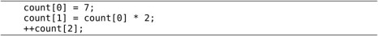
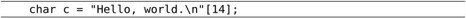
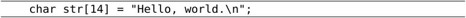

数组（Array）也是一种复合数据类型，它由一系列相同类型的元素（Element）组成。例如定义一个由4个int型元素组成的数组count：
和结构体成员类似，数组count的4个元素的存储空间也是相邻的。结构体成员可以是基本数据类型，也可以是复合数据类型，数组中的元素也是如此。根据组合规则，我们可以定义一个由4个结构体元素组成的数组：
也可以定义一个包含数组成员的结构体：
数组类型的长度应该用一个整数常量表达式来指定⑲。数组中的元素通过下标（或者叫索引，Index）来访问。例如前面定义的由4个int型元素组成的数组count图示如图8.1所示。
图8.1 数组count
整个数组占了4个int型的存储单元，存储单元用小方框表示，里面的数字是存储在这个单元中的数据（假设都是0），而框外面的数字是下标，这4个单元分别用count[0]、count[1]、count[2]、count[3]来访问。注意，在定义数组int count[4];时，方括号（Bracket）中的数字4表示数组的长度，而在访问数组时，方括号中的数字表示访问数组的第几个元素。和我们平常数数不同，数组元素是从“第0个”开始数的，大多数编程语言都是这么规定的，所以计算机术语中有Zeroth这个词。这样规定使得访问数组元素非常方便，比如count数组中的每个元素占4个字节，则count[0]位于数组开头，而count[i]表示从数组开头跳过4×i个字节之后的那个存储单元。这种数组下标的表达式不仅可以表示存储单元中的值，也可以表示存储单元本身，也就是说可以做左值，因此以下语句都是正确的：

到目前为止我们学习了五种后缀运算符：后缀++、后缀--、结构体取成员.、数组取下标[]、函数调用()。还学习了五种单目运算符（或者叫前缀运算符）：前缀++、前缀--、正号+、负号-、逻辑非!。在C语言中后缀运算符的优先级最高，单目运算符的优先级仅次于后缀运算符，比其他运算符的优先级都高，所以上面举例的++count[2]应该看作对count[2]做前缀++运算。
数组下标也可以是表达式，但表达式的值必须是整型的。例如：
使用数组下标不能超出数组的长度范围，这一点在使用变量做数组下标时尤其要注意。C编译器并不检查count[-1]或是count[100]这样的访问越界错误，编译时能顺利通过，所以属于运行时错误⑳。但有时候这种错误很隐蔽，发生访问越界时程序可能并不会立即崩溃，而执行到后面某个正确的语句时却有可能突然崩溃（在第10.4节我们会看到这样的例子）。所以从一开始写代码时就要小心避免出问题，事后依靠调试来解决问题的成本是很高的。
数组也可以像结构体一样初始化，未赋初值的元素也是用0来初始化，例如：
则count[0]等于3，count[1]等于2，后面两个元素等于0。如果定义数组的同时初始化它，也可以不指定数组的长度，例如：
编译器会根据Initializer有三个元素确定数组的长度为3。利用C99的新特性也可以做Memberwise Initialization：
下面举一个完整的例子：
例8.1 定义和访问数组
这个例子通过循环把数组中的每个元素依次访问一遍，在计算机术语中称为遍历（Traversal）。注意控制表达式i < 4，如果写成i <= 4就错了，因为count[4]是访问越界。
数组和结构体虽然有很多相似之处，但也有一个显著的不同：数组不能相互赋值或初始化。比如：
用数组a来初始化数组b是错的。再比如：
用数组b给数组a赋值也是错的。
既然不能相互赋值，也就不能用数组类型作为函数的参数或返回值。如果写出这样的函数定义：
然后这样调用：
编译器也不会报错，但这样写并不是传一个数组类型参数的意思。对于数组类型有一条特殊的类型转换规则：数组类型做右值使用时，自动转换成指向数组首元素的指针。对于函数声明也有一条特殊规则：在函数原型中，如果参数写成数组的形式，则该参数实际上是指针类型。所以上面的函数调用其实是传一个指针类型的参数，而不是数组类型的参数。接下来的几章里有的函数需要访问数组，我们就把数组定义为全局变量给函数访问，等到第22章讲了指针再使用传参的办法。
数组类型不能相互赋值或初始化也是因为这条规则，例如上面提到的a=b这个表达式，a和b都是数组类型的变量，但是b做右值使用，自动转换成指针类型，而左边仍然是数组类型，所以编译器报的错是error: incompatible types in assignment。
1．编写一个程序，定义两个类型和长度都相同的数组，将其中一个数组的所有元素拷贝给另一个。既然数组不能直接赋值，想想应该怎么实现。
本节通过一个实例介绍使用数组的一些基本模式。问题是这样的：首先生成一列0～9的随机数保存在数组中，然后统计其中每个数字出现的次数并打印，检查这些数字的随机性如何。随机数在某些场合（例如游戏程序）是非常有用的，但是用计算机生成完全随机的数却不是那么容易。计算机执行每一条指令的结果都是确定的，没有一条指令产生的是随机数，调用C标准库函数得到的随机数其实是伪随机（Pseudorandom）数，是用数学公式算出来的确定的数，只不过这些数看起来很随机，并且从统计意义上也很接近于均匀分布（Uniform Distribution）的随机数。
C标准库中生成伪随机数的是rand函数，使用这个函数需要包含头文件stdlib.h，它没有参数，返回值是一个介于0和RAND_MAX之间的接近均匀分布的整数。RAND_MAX是该头文件中定义的一个常量，在不同的平台上有不同的取值，但可以肯定它是一个非常大的整数。通常我们用到的随机数是限定在某个范围之中的，例如0～9，而不是0～RAND_MAX，我们可以用%运算符将rand函数的返回值处理一下：

完整的程序如下：
例8.2 生成并打印随机数
这里介绍一种新的语法：用#define定义一个常量。实际上编译器的工作分为两个阶段，先是预处理（Preprocess）阶段，然后才是编译阶段，用gcc的-E选项可以看到预处理之后、编译之前的程序，例如：
可见在这里预处理器做了两件事情，一是把头文件stdio.h和stdlib.h在代码中展开，二是把#define定义的标识符N替换成它的定义20（在代码中做了三处替换，分别位于数组的定义中和两个函数中）。像#include和#define这种以#号开头的行称为预处理指示（Preprocessing Directive），我们将在第20章学习其他预处理指示。此外，用cpp main.c命令也可以达到同样的效果，只做预处理而不编译，cpp表示C preprocessor。
那么用#define定义的常量和第7.3节讲的枚举常量有什么区别呢？首先，define不仅用于定义常量，也可以定义更复杂的语法结构，称为宏（Macro）定义。其次，define定义是在预处理阶段处理的，而枚举是在编译阶段处理的。试试看把第7.3节习题2的程序改成下面这样是什么结果。
注意，虽然include和define在预处理指示中有特殊含义，但它们并不是C语言的关键字，换句话说，它们也可以用作标识符，例如声明int include;或者void define(int);。在预处理阶段，如果一行以#号开头，后面跟include或define，预处理器就认为这是一条预处理指示，除此之外出现在其他地方的include或define预处理器并不关心，只当成普通的标识符交给编译阶段去处理。
回到随机数这个程序继续讨论，一开始为了便于分析和调试，我们取小一点的数组长度，只生成20个随机数，这个程序的运行结果为：
看起来很随机了。但随机性如何呢？分布得均匀吗？所谓均匀分布，应该每个数出现的概率是一样的。在上面的20个结果中，6出现了5次，而4和8一次也没出现过。但这说明不了什么问题，毕竟我们的样本太少了，才20个数，如果样本足够多，比如说100000个数，统计一下其中每个数字出现的次数也许能说明问题。但总不能把100000个数都打印出来然后挨个去数吧？我们需要写一个函数统计每个数字出现的次数。完整的程序如下：
例8.3 统计随机数的分布
我们只要把#define N的值改为100000，就相当于把整个程序中所有用到N的地方都改为100000了。如果我们不这么写，而是在定义数组时直接写成int a[20];，在每个循环中也直接使用20这个值，这称为硬编码（Hard coding）。如果原来的代码是硬编码的，那么一旦需要把20改成100000就非常麻烦，你需要找遍整个代码，判断哪些20表示这个数组的长度就改为100000，哪些20表示别的数量则不做改动，如果代码很长，这是很容易出错的。所以，写代码时应尽可能避免硬编码，这其实也是一个“提取公因式”的过程，和第7.2节讲的抽象具有相同的作用，就是避免一个地方的改动波及较大的范围。这个程序的运行结果如下：
各数字出现的次数都在10000次左右，可见是比较均匀的。
1．用rand函数生成[10, 20]之间的随机整数，表达式应该怎么写？
继续上面的例子。我们统计一列0～9的随机数，打印每个数字出现的次数，像这样的统计结果称为直方图（Histogram）。有时候我们并不只是想打印，更想把统计结果保存下来以便做后续处理。我们可以把程序改成这样：
这显然太繁琐了。要是这样的随机数有100个呢？显然这里用数组最合适不过了：
有意思的是，这里的循环变量i有两个作用，一是作为参数传给howmany函数，统计数字i出现的次数，二是做histogram的下标，也就是“把数字i出现的次数保存在数组histogram的第i个位置”。
尽管上面的方法可以准确地得到统计结果，但是效率很低，这100000个随机数需要从头到尾检查十遍，每一遍检查只统计一种数字的出现次数。其实可以把histogram中的元素当做累加器来用，这些随机数只需要从头到尾检查一遍（Single Pass）就可以得出结果：
首先把histogram的所有元素初始化为0，注意使用局部变量的值之前一定要初始化，否则值是不确定的。接下来的代码很有意思，在每次循环中，a[i]就是出现的随机数，而这个随机数同时也是histogram的下标，这个随机数每出现一次就把histogram中相应的元素加1。
把上面的程序运行几遍，你就会发现每次产生的随机数都是一样的，不仅如此，在别的计算机上运行该程序产生的随机数很可能也是这样的。这正说明了这些数是伪随机数，是用一套确定的公式基于某个初值算出来的，只要初值相同，随后的整个数列就都相同。实际应用中不可能使用每次都一样的随机数，例如开发一个麻将游戏，每次运行这个游戏摸到的牌不应该是一样的。因此，C标准库允许我们自己指定一个初值，然后在此基础上生成伪随机数，这个初值称为Seed，可以用srand函数指定Seed。通常我们通过别的途径得到一个不确定的数作为Seed，例如调用time函数得到当前系统时间距1970年1月1日00:00:00㉑的秒数，然后传给srand：

然后再调用rand，得到的随机数就和刚才完全不同了。调用time函数需要包含头文件time.h，这里的NULL表示空指针，到第22.1节再详细解释。
1．补完本节直方图程序的main函数，以可视化的形式打印直方图。例如上一节统计20个随机数的结果是：
2．定义一个数组，编程打印它的全排列。比如定义：
则运行结果是：
程序的主要思路是：
1．把第1个数换到最前面来（本来就在最前面），准备打印1xx，再对后两个数2和3做全排列。
2．把第2个数换到最前面来，准备打印2xx，再对后两个数1和3做全排列。
3．把第3个数换到最前面来，准备打印3xx，再对后两个数1和2做全排列。
可见这是一个递归的过程，把对整个序列做全排列的问题归结为对它的子序列做全排列的问题，注意我没有描述Base Case怎么处理，你需要自己想。你的程序要具有通用性，如果改变了N和数组a的定义（比如改成4个数的数组），其他代码不需要修改就可以做4个数的全排列（共24种排列）。
完成了上述要求之后再考虑第二个问题：如果再定义一个常量M表示从N个数中取几个数做排列（N == M时表示全排列），原来的程序应该怎么改？
最后再考虑第三个问题：如果要求从N个数中取M个数做组合而不是做排列，就不能用原来的递归过程了，想想组合的递归过程应该怎么描述，编程实现它。
之前我一直对字符串避而不谈，不做详细解释，现在已经具备了必要的基础知识，可以深入讨论一下字符串了。字符串字面值和数组类型相似，它的每个元素是字符型的，例如字符串"Hello, world.\n"图示如图8.2所示。
图8.2 字符串
注意每个字符串末尾都有一个字符'\0'做结束符，这里的\0是ASCII码的八进制表示，也就是ASCII码为0的Null字符，所以字符串也称为“以Null结尾的字符串”（Null-terminated String）。
数组元素可以通过数组名加下标的方式访问，而字符串字面值也可以像数组名一样使用，可以加下标访问其中的字符，例如：

把"Hello, world.\n"这个字符串看作一个数组，从图8.2可以看出，下标14的位置是字符'\0'，所以这个语句把'\0'赋给变量c。注意，通过下标可以读取字符串字面值中的字符，却不允许修改其中的字符：
这行代码会产生编译错误“error: assignment of read-only location”，即字符串字面值所代表的存储空间是只读的，不允许修改。字符串字面值还有一点和数组类型相似，做右值使用时自动转换成指向首元素的指针，在第3.3节我们看到printf原型的第一个参数是指针类型，而printf("hello world")其实就是传一个指针参数给printf，关于字符串字面值和指针的关系将在第22.4节详细解释。
字符串字面值有一种特殊用法，前面讲过数组可以像结构体一样初始化，如果是字符数组，也可以用一个字符串字面值来初始化㉒：
相当于：
str的后4个元素没有指定，自动初始化为'\0'，即Null字符。注意，虽然字符串字面值"Hello"是只读的，但用它初始化的数组str却是可读可写的。数组str中保存了一串字符，以Null字符结尾，也可以叫字符串。在本书中只要是以Null结尾的一串字符都叫字符串，不管是像str这样的字符数组，还是像"Hello"这样的字符串字面值。
如果用于初始化的字符串字面值比数组还长，比如：
则数组str只包含字符串的前10个字符，不包含Null字符，这种情况编译器会给出警告。如果要用一个字符串字面值准确地初始化一个字符数组，最好的办法是不指定数组的长度，让编译器自己计算：
字符串字面值的长度包括Null字符在内一共15个字符，编译器会确定数组str的长度为15。
有一种情况需要特别注意，如果用于初始化的字符串字面值比数组刚好长出一个Null字符的长度，比如：

则数组str不包含Null字符，并且编译器不会给出警告，参考文献[6]的6.7.8节说这样规定是为程序员方便，以前的很多编译器都是这样实现的，不管它有理没理，C标准既然这么规定了我们也没办法，只能自己小心了。
补充一点，printf函数的格式化字符串中可以用%s表示字符串的占位符。在学习字符数组以前，我们用%s没什么意义，因为：
还不如写成：
但现在字符串可以保存在一个数组里面，用%s来打印就很有必要了：
printf会从数组str的开头一直打印到Null字符为止，Null字符本身是Non-printable字符，不打印。这其实是一个危险的信号：如果数组str中没有Null字符，那么printf函数就会访问数组越界，后果可能会很诡异，有时候打印出乱码，有时候看起来没错误，有时候引起程序崩溃。
就像结构体可以嵌套一样，数组也可以嵌套，一个数组的元素可以是另外一个数组，这样就构成了多维数组（Multi-dimensional Array）。例如定义并初始化一个二维数组：
数组a有3个元素，a[0]、a[1]、a[2]。每个元素也是一个数组，例如a[0]是一个数组，它有两个元素a[0][0]、a[0][1]，这两个元素的类型是int，值分别是1、2，同理，数组a[1]的两个元素是3、4，数组a[2]的两个元素是5、0，如图8.3所示。
图8.3 多维数组
从概念模型上看，这个二维数组是三行两列的表格，元素的两个下标分别是行号和列号。从物理模型上看，这六个元素在存储器中仍然是连续存储的，就像一维数组一样，相当于把概念模型的表格一行一行接起来拼成一串，C语言的这种存储方式称为Row-major方式，而有些编程语言（例如FORTRAN）是把概念模型的表格一列一列接起来拼成一串存储的，称为Column-major方式。
多维数组也可以像嵌套结构体一样用嵌套Initializer初始化，例如上面的二维数组也可以这样初始化：
利用C99的新特性也可以做Memberwise Initialization，例如：
结构体和数组嵌套的情况也可以做Memberwise Initialization，例如：
如果是多维字符数组，也可以嵌套使用字符串字面值做Initializer，例如：
例8.4 多维字符数组
这个程序中定义了一个多维字符数组char days[8][10];，如图8.4所示。为了使1～7刚好映射到days[1]～days[7]，我们把days[0]空出来不用，所以第一维的长度是8，为了使最长的字符串"Wednesday"能够保存到一行，末尾还能多出一个Null字符的位置，所以第二维的长度是10。
图8.4 多维字符数组
这个程序和例4.1的功能其实是一样的，但是代码简洁多了。简洁的代码不仅可读性强，而且维护成本也低，像例4.1那样一堆case、printf和break，如果漏写一个break就要出Bug。这个程序之所以简洁，是因为用数据代替了代码。具体来说，通过下标访问字符串组成的数组可以代替一堆case分支判断，这样就可以把每个case里重复的代码（printf调用）提取出来，从而又一次达到了“提取公因式”的效果。这种方法称为数据驱动的编程（Data-driven Programming），写代码最重要的是选择正确的数据结构来组织信息，设计控制流程和算法尚在其次，只要数据结构选择得正确，其他代码自然而然就变得容易理解和维护了，就像这里的printf自然而然就被提取出来了。参考文献[13]的第9章说：“Show me your flowcharts and conceal your tables, and I shall continue to be mystified. Show me your tables, and I won't usually need your flowcharts; they'll be obvious.”
最后，综合本章的知识，我们来写一个最简单的小游戏——剪刀石头布：
例8.5 剪刀石头布
0、1、2三个整数分别是剪刀、石头、布在程序中的内部表示，用户也要求输入0、1或2，然后和计算机随机生成的0、1或2比胜负。这个程序的主体是一个死循环，需要按Ctrl+C组合键退出程序。以往我们写的程序都只有打印输出，在这个程序中我们第一次碰到处理用户输入的情况。我们简单介绍一下scanf函数的用法，到第24.2.9节再详细解释。scanf("%d", &man)这个调用的功能是等待用户输入一个整数并回车，这个整数会被scanf函数保存在man这个整型变量里。如果用户输入合法（输入的确实是数字而不是别的字符），则scanf函数返回1，表示成功读入一个数据。但即使用户输入的是整数，我们还需要进一步检查是不是在0～2的范围内，写程序时对用户输入要格外小心，用户有可能输入任何数据，他才不管游戏规则是什么。
和printf类似，scanf也可以用%c、%f、%s等转换说明。如果在传给scanf的第一个参数中用%d、%f或%c表示读入一个整数、浮点数或字符，则第二个参数的形式应该是&运算符加相应类型的变量名，表示读进来的数保存到这个变量中，&运算符的作用是得到一个指针类型，到第22.1节再详细解释；如果在第一个参数中用%s读入一个字符串，则第二个参数应该是数组名，数组名前面不加&，因为数组类型做右值时自动转换成指针类型，在第10.2节有scanf读入字符串的例子。
留给读者思考的问题是：(man - computer + 4) % 3 - 1这个神奇的表达式是如何比较出0、1、2这三个数字在“剪刀石头布”意义上的大小的？